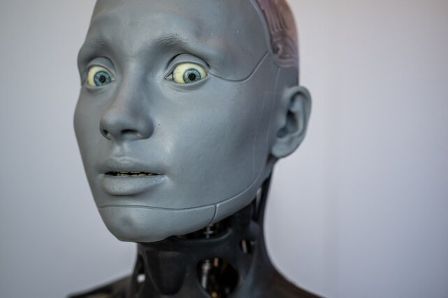

مقدمه
هوش مصنوعی در سال 1404 شاهد پرشهای بزرگی بوده است. از مدلهای زبانی جدید تا کاربردهای عملی در پزشکی، آموزش و صنعت — ما در حال ورود به دورانی هستیم که هوش مصنوعی جزء لاینفک زندگی ماست.
اخبار شماره ۱: معرفی GPT-5 توسط OpenAI
OpenAI در نیمه نخست سال 1404، GPT-5 را با قابلیتهای چشمگیری در درک محاورهای، پشتیبانی از زبان فارسی و هوش تصویری معرفی کرد. این مدل قادر به ایجاد محتوا، برنامهنویسی و حتی تشخیص تصاویر پزشکی است.

اخبار شماره ۲: هوش مصنوعی در سلامت عمومی
بیمارستانهای بزرگ ایران و جهان از هوش مصنوعی برای تشخیص بیماریهای پوستی، سرطان و بیماریهای قلبی استفاده کردهاند. دقت بالا و سرعت عمل این سیستمها باعث شده استفاده از آنها گسترده شود.
اخبار شماره ۳: توسعه هوش مصنوعی در ایران
مرکز ملی هوش مصنوعی ایران اقدام به توسعه مدلهای زبانی محلی کرده است. این مدلها به بهتر شدن خدمات دولتی، آموزشی و مدیریت شهری کمک زیادی میکنند و قابلیت رقابت با مدلهای جهانی را دارند.
